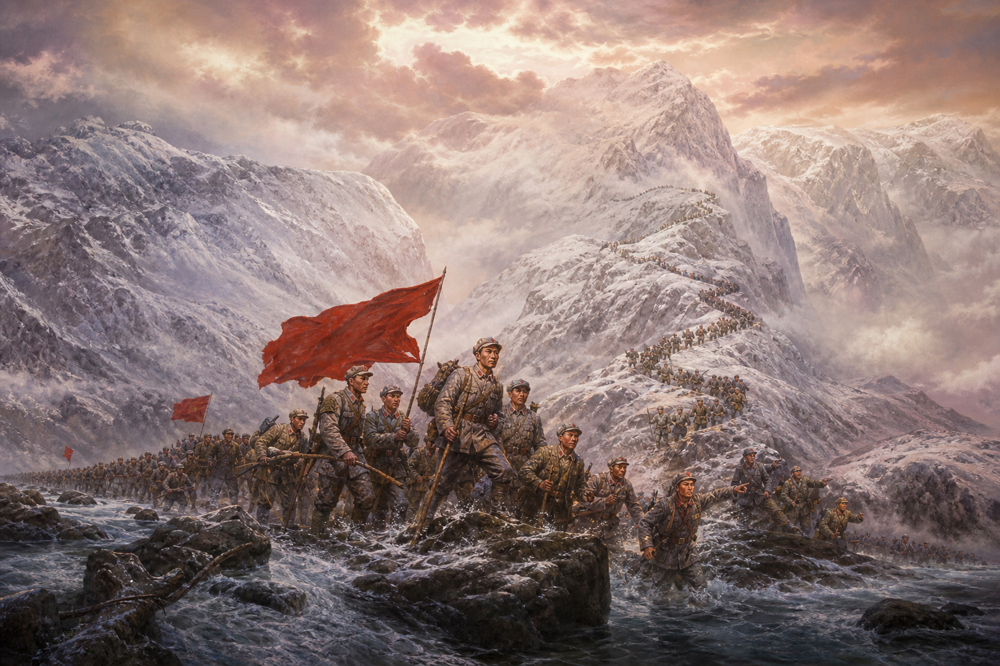
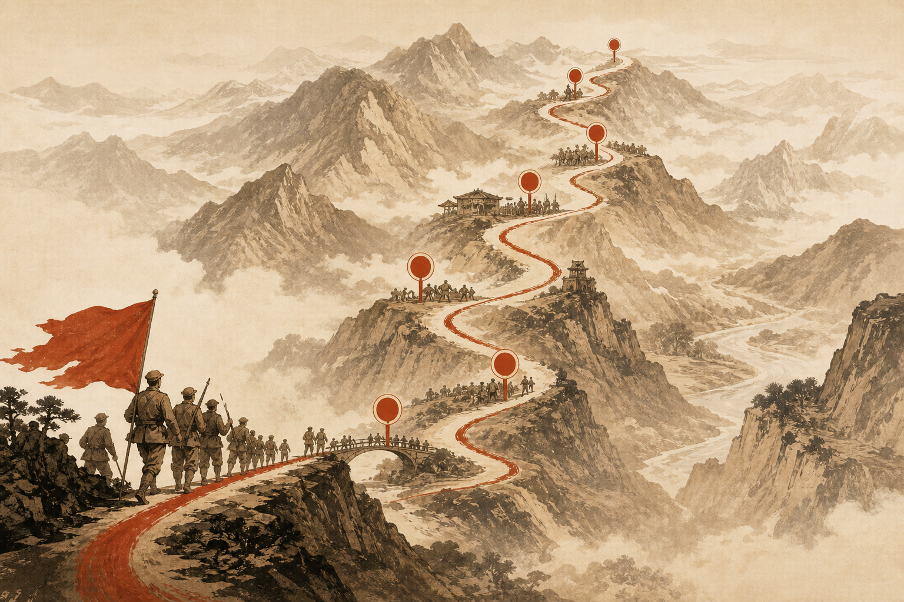
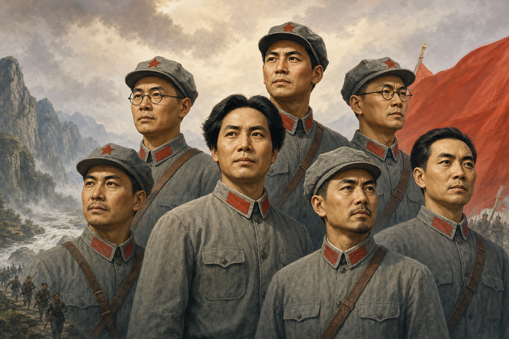
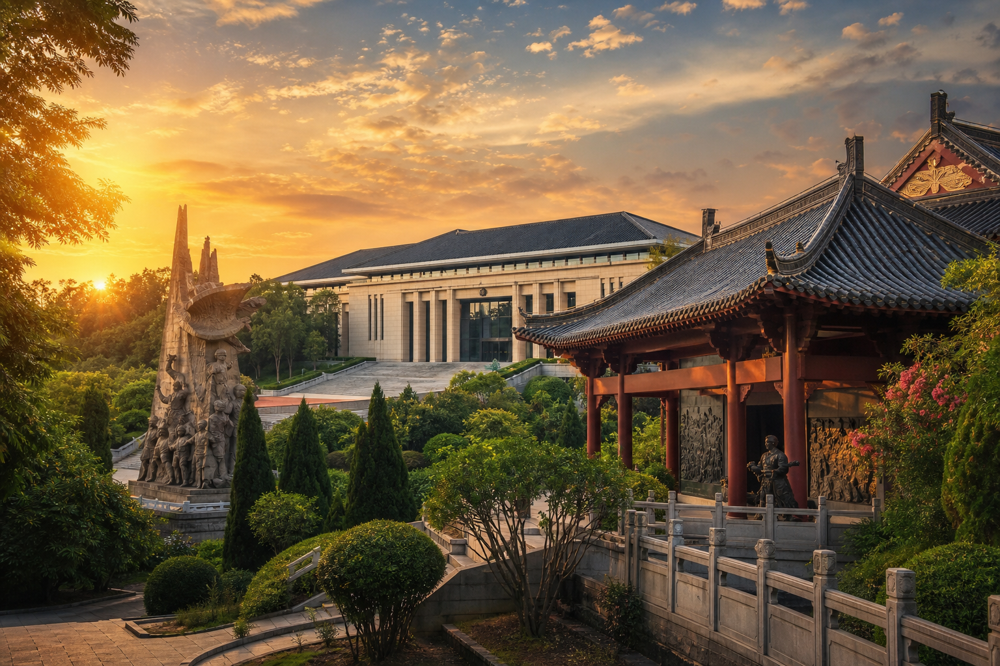
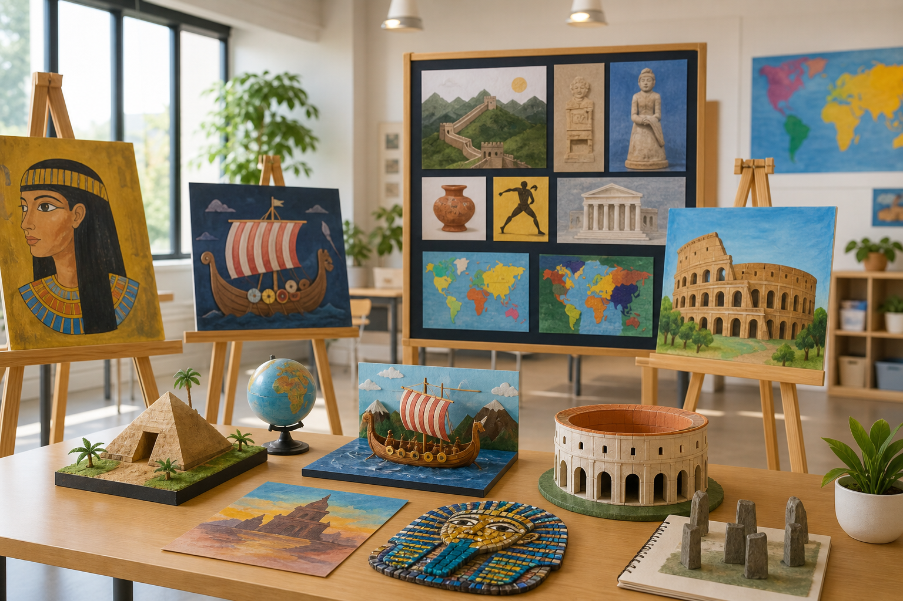

什么是长征？
1934年至1936年，中国工农红军主力离开原有根据地，进行战略转移，最终在陕甘地区胜利会师的伟大远征。

一组数字，读懂这段改变中国命运的伟大征程。
大约行程距离
中央红军历时约一年
途经十余个省区
翻越主要山脉
1934年至1936年，中国工农红军主力离开原有根据地，进行战略转移，最终在陕甘地区胜利会师的伟大远征。
第五次反“围剿”失利后，中央红军被迫实行战略转移，以保存革命力量、开辟新的根据地。
长征保存了革命火种，锤炼了党的队伍，铸就了伟大的长征精神，成为中华民族宝贵的精神财富。
从江西瑞金出发，到陕甘宁地区胜利会师，历时两年，行程二万五千里。

中央红军从1934年10月开始战略转移，突破封锁、血战湘江、召开遵义会议，在极端艰苦的条件下完成了这一人类历史上的伟大壮举。沿途既有险恶的自然环境，也有敌人的围追堵截，更有无数感人至深的军民情谊。
中央红军从江西瑞金、于都等地出发，开始战略大转移，踏上艰苦卓绝的长征之路。出发时中央红军约8.6万人。
红军在湘江战役中遭受重大损失，以巨大牺牲突破国民党军的第四道封锁线。湘江之战是长征中最惨烈的一役。
在湘黔交界的通道一带，中央采纳毛泽东建议，改向贵州进军，避免与优势敌军决战，为遵义会议创造了条件。
确立以毛泽东为代表的新的中央领导集体，是中国共产党历史上生死攸关的转折点，长征从此走上正确道路。
毛泽东指挥红军声东击西，四次渡过赤水河，灵活机动地调动敌人，展现出高超的军事指挥艺术。
红军以声东击西、调虎离山之计，摆脱数十万国民党军的围追堵截，胜利渡过金沙江。
红军先遣队强渡大渡河，22名勇士冒着枪林弹雨攀着铁索夺下泸定桥，为全军北上打开通道。
红军战士在海拔4000多米的雪山上艰难行军，许多人永远长眠于雪山之巅。这是红军翻越的第一座大雪山。
中央红军与红四方面军在四川懋功（今小金）胜利会师，两军会师壮大了红军力量，鼓舞了全军士气。
在无边无际的沼泽中，红军以顽强意志走过被称为“死亡之海”的茫茫草地，许多人陷入泥潭，献出生命。
红军突破天险腊子口，打开了通向甘肃的通道，为进入陕甘地区奠定了关键基础。
中央红军到达陕西吴起镇，与陕北红军胜利会师，胜利完成战略转移任务。毛泽东写下《七律·长征》。
红一、红二、红四方面军在甘肃会宁、宁夏将台堡等地胜利会师，标志着长征的伟大胜利。
他们用生命和热血，书写了长征路上最壮丽的篇章。

长征途中，无数革命先辈以坚定的理想信念和无畏的牺牲精神，为民族独立和人民解放事业建立了不朽功勋。既有运筹帷幄的领袖，也有普通战士与少数民族同胞的无私支援。
伟大的马克思主义者 · 战略家
遵义会议后成为党和红军的实际领导者，以卓越的军事指挥才能，带领红军走出绝境，走向胜利。
伟大的无产阶级革命家 · 外交家
长征中任红军总政治委员，与毛泽东等一起指挥红军行动，在极端困难条件下稳定军心、协调各方。
伟大的马克思主义者 · 军事家
与毛泽东共同指挥红军，被尊称为“朱毛红军”的核心，以宽厚品格和坚定意志鼓舞全军士气。
开国元帅 · 军事家
率红三军团参加长征，在湘江战役等关键战斗中指挥若定，以刚正不阿的品格深受战士爱戴。
开国元帅 · 军事家
长征中任红军总参谋长，与彝族首领小叶丹结盟，帮助红军顺利通过彝族地区，体现了民族团结政策的威力。
开国元帅 · 军事家
任红一军团政治委员，在长征途中参与指挥多次重要战斗，为保存和发展红军力量作出重要贡献。
无产阶级革命家 · 南宁籍
生于广西南宁，杰出的妇女运动领袖，与周恩来并肩战斗，为革命事业奋斗终生，是南宁的骄傲。
女红军 · 革命家
长征中随军转战，曾在战斗中身负重伤仍坚持前行，展现了女红军坚韧不拔、无私奉献的崇高品格。
红四团22名突击队员
在枪林弹雨中攀着铁索奋勇前进，以血肉之躯为全军打开北上通道，谱写了气壮山河的英雄史诗。
把长征精神一代代传下去，激励我们在新时代奋勇前行。
长征精神，是中国共产党人和红军将士用生命和热血铸就的伟大精神，已深深融入中华民族的血脉之中。它不仅属于过去，更属于现在和未来。
革命理想高于天。红军将士在生死考验面前始终坚信正义事业必然胜利，这种理想信念是长征胜利的力量源泉。
在湘江、在雪山、在草地，无数先烈以生命为代价铺就胜利之路。“砍头不要紧，只要主义真”是最好写照。
红军将士同甘共苦、生死与共，把最后一口粮留给战友，把最后一件衣服留给战友，凝聚起无坚不摧的力量。
缺衣少食、缺医少药，红军以人类难以想象的意志力，在极端恶劣的自然环境中走出一条生路。
遵义会议纠正错误军事路线，确立正确领导，体现了我们党从中国实际出发、独立自主解决中国革命问题的宝贵精神。
长征途中严格执行群众纪律，得到各族人民的支持与帮助。人民是长征胜利最深厚的力量根基。
红军不怕远征难，万水千山只等闲。
五岭逶迤腾细浪，乌蒙磅礴走泥丸。
金沙水拍云崖暖，大渡桥横铁索寒。
更喜岷山千里雪，三军过后尽开颜。
「每一代人有每一代人的长征路，我们要在新的历史条件下，继续弘扬长征精神。」
广西壮族自治区南宁市及周边，留存着丰富的红色革命历史印记。

南宁作为广西首府，与右江革命根据地、广西早期革命运动紧密相连，留下了众多可歌可泣的革命故事和珍贵遗址。走进这些地方，就是与历史对话。
位于南宁市民族大道，展示无产阶级革命家邓颖超的生平事迹，是进行爱国主义和革命传统教育的重要基地。
南宁市青秀区民族大道纪念广西早期革命领导人李明瑞、韦拔群等烈士，展示广西农民运动和武装斗争的光辉历史。
南宁市南湖公园1926年韦拔群在此创办农民运动讲习所，培养大批农民运动骨干，是广西早期革命活动的重要见证。
南宁市东葛路一带1939年昆仑关战役是抗战以来中国军队取得的重大胜利之一，遗址现为全国重点文物保护单位，具有重要纪念意义。
南宁市兴宁区昆仑关南宁及周边留存多处与抗战、解放战争相关的纪念设施，见证广西人民在民族危亡时刻的英勇斗争。
南宁市区及周边系统展示广西近现代革命历程，包括农民运动、武装起义、根据地建设等内容，是了解本地红色历史的重要窗口。
南宁市区1930年邓小平、李明瑞等领导龙州起义，创建中国工农红军第八军，是广西革命史上的重大事件。
崇左市龙州县1929年邓小平、张云逸等领导百色起义，创建红七军，右江革命根据地成为广西重要的红色摇篮。
百色市右江区韦拔群在东兰等地开展农民运动，创办讲习所，为广西革命播下火种，是壮乡红色历史的重要坐标。
河池市东兰县同学们用画笔、文字和创意，表达对长征精神的理解与传承。

通过征文、绘画、手抄报、短视频等多种形式，同学们在学习中感悟历史，在创作中传承精神。以下作品为示例展示，欢迎同学们投稿真实作品。
新时代的长征路，是科技强国之路、民族复兴之路。作为青少年，我们要以长征精神为指引，努力学习，报效祖国。
用水彩描绘红军战士翻越夹金山的场景，皑皑白雪中一面红旗格外鲜艳，象征永不熄灭的理想之火。
以时间轴形式梳理长征重要节点，配以手绘插图和心得体会，图文并茂地展现长征的伟大历程。
实地探访邓颖超纪念馆等南宁红色遗址，以 vlog 形式记录参观感受，呼吁同龄人铭记历史、砥砺前行。
全文朗诵毛泽东同志的《七律·长征》，声情并茂，在班级主题班会上获得师生一致好评。
利用废旧材料制作飞夺泸定桥微缩场景模型，铁索桥、勇士、江水细节丰富，在科技节上展出。
原创历史情景剧，再现遵义会议前后关键决策时刻，在校园艺术节舞台上演出，反响热烈。
用镜头记录南宁红色纪念场所的细节：浮雕、展陈、纪念碑与参观人群，呈现当代人对历史的敬仰。
同学自创歌词，歌颂不怕困难、团结奋进的精神，在学校合唱比赛中作为节目表演。
欢迎投稿你的作品（征文 / 绘画 / 视频 / 摄影均可）
提交作品测一测你对长征了解多少？点选答案，立刻揭晓。
已答对 0 / 5 题